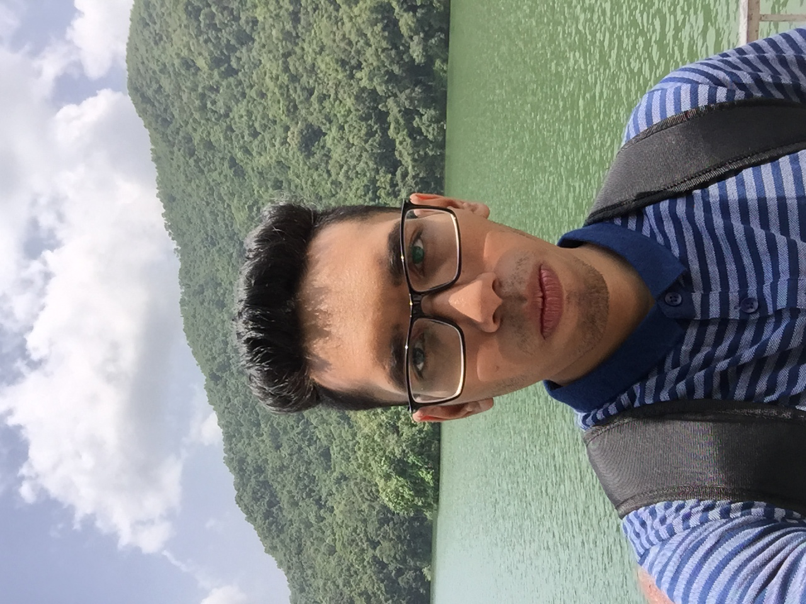
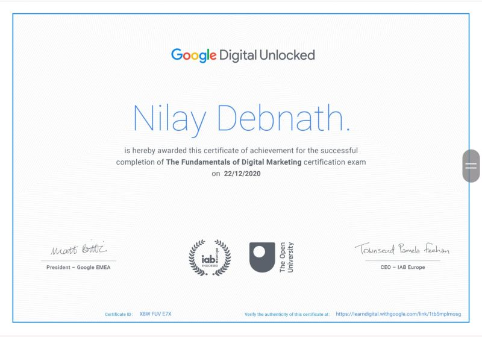
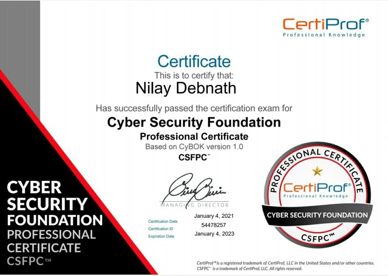
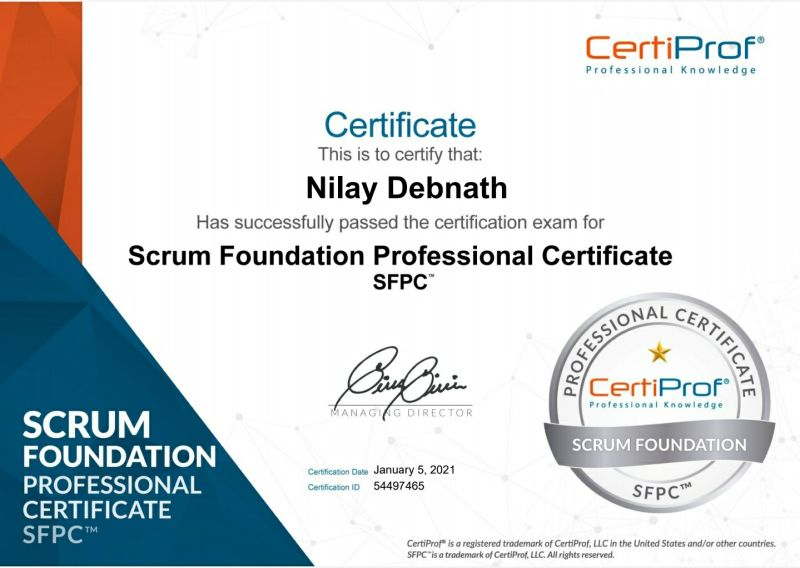

Nilay Debnath
Software Engineer.
Send email
Facebook
Youtube

About Myself
Hi, I am Nilay Debnath.I am 22 years old. I am a student of Stamford University bangladesh.
I am a student of CSE department.My hometown is Satkhira but now I live in Dhaka. My father is an employee and my mother is a housewife.
I have a little sister who studies in class 10. I can speak both in Bangla and English. I like to play video games. My favourite color is Red.
Cat is my favourite animal. My hobbies are playing video games and listening to music.
Personal Information:
-
I am a young, determined hard and smart working person. I believe in task based roles and complete ownership of work.
-
Languages Known:Bangla and English
-
Hobbies:I love reading Science and IT related books / magazines, playing Chess and video games, swimming, listening music, surfing Internet, self-learning through e-courses.
Educational Qualifications
| Qualification |
Board |
Class / Grades |
Year |
| S.S.C (Science) |
Jessore board |
A |
2015 |
| H.S.C (Science) |
Jessore Board |
A- |
2017 |
| B.Sc. in Computer Science & Engineering |
Stamford University |
1st Class |
2022 |
Technical Skills
-
Operating Systems: DOS, Windows XP, Windows Vista, Windows 7, windows 10, MacOS (OS X, Catalina, Big-sur), Linux (Ubuntu, Kali linux)
-
Application Software: Office 2007, Microsoft office 2019, Office for Mac (pages, Keynote, numbers), webstrome, pycharm, phpstrom, DataGrip.
-
Programming Skills:HTML, CSS, Python,Java, C#, JavaScript, learning C and C++, sql query
Certifications / Awards:
- Certificate of completing The Fundamentals of Digital Marketing- Google Digital Unlocked
- Cyber Security Foundation professional Certificate- CertiProf professional Knowledge
- Scrum Foundation professional Certificate- CertiProf professional Knowledge


